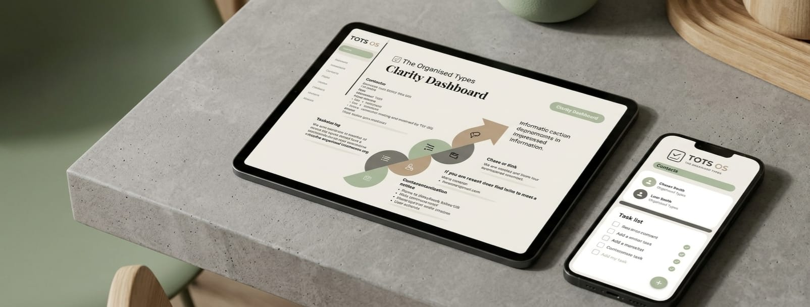
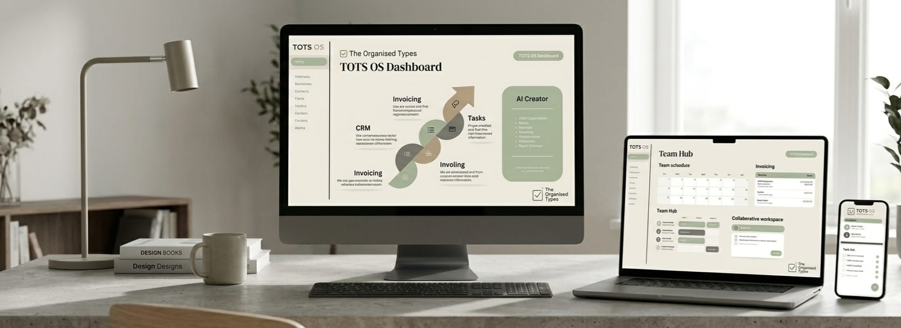
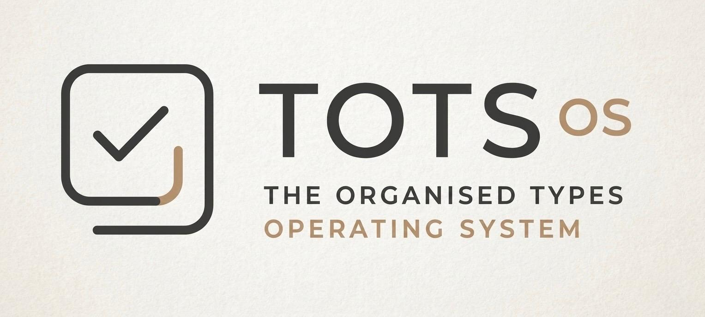

What We Do
Architects
Building order out of chaos.
Guides
Supporting your transformation.
Rebels
Rejecting corporate culture.
Building order out of chaos.
Supporting your transformation.
Rejecting corporate culture.



